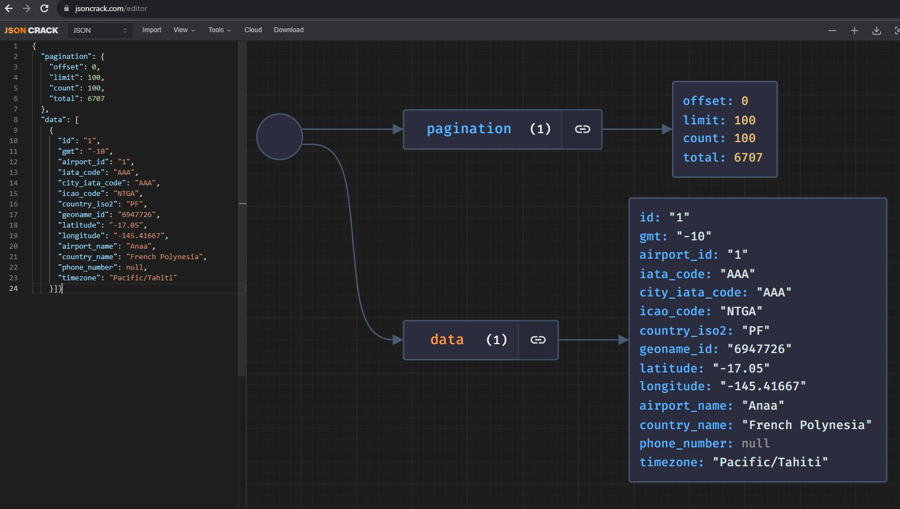
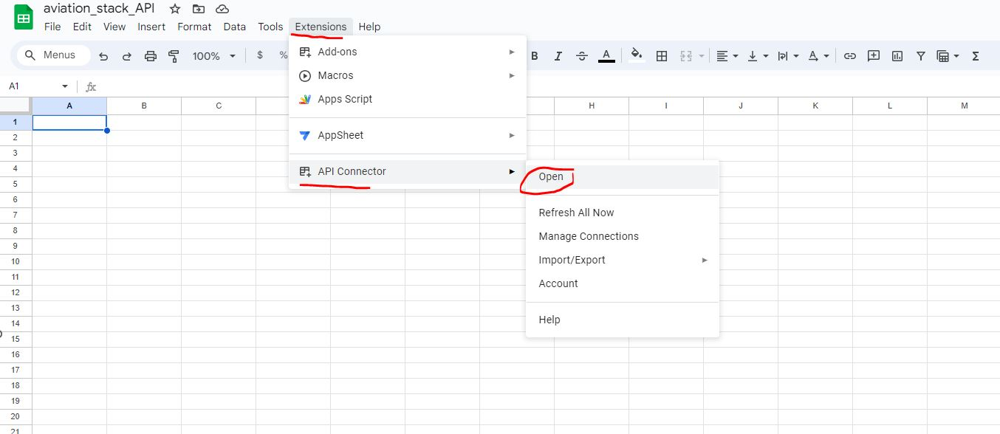
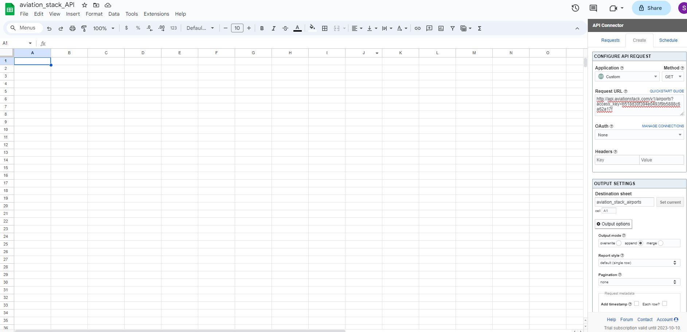
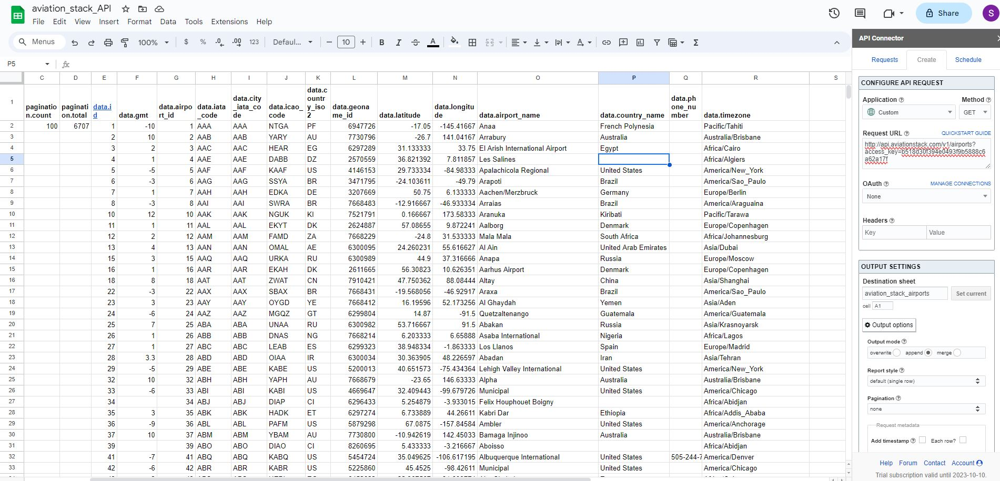
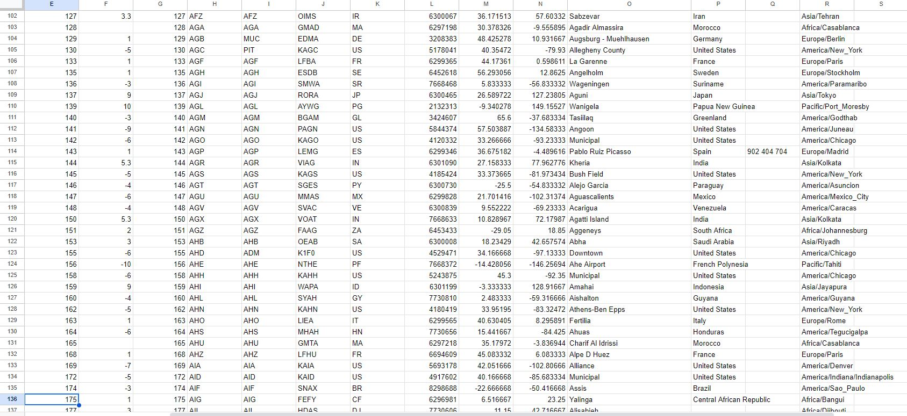
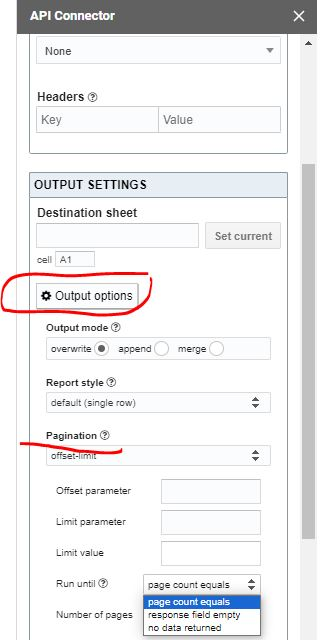

https://api.aviationstack.com/v1/<Endpoint>?access_key=<your_access_key> Free, Real-time Flight Status & Global Aviation Data API
In this tutorial I will show you how to access real-time (historical data behind a paywall) flight status, airports, airlines and aircraft data using the aviationstack API. I will also introduce you to JSON CRACK to visualize JSON files (useful for API responses which can often be quite complex). Finally I will show you how to populate your API request responses DIRECTLY into Google Sheets (avoiding JSON structure headaches) using the Mixed Analytics API Connector for further analysis and onward visualization.
Sit back and enjoy the flight :)
Fasten your seatbelts
The first step is to sign up for free with aviationstack.com to get your API Key. This will be needed to make API requests.
General Structure of Requests
The general template of a request is :
So if we wish to retrieve Airports information the structure of the request is :
https://api.aviationstack.com/v1/airports?access_key=<your_access_key>A number of API Endpoints are provided :
- Real-Time Flights -
flights(Available on: All plans) - Historical Flights -
flights(Available on: Basic Plan and higher) - Airline Routes -
routes(Available on: Basic Plan and higher) - Airports
airports(Available on: All plans) - Airlines
airlines(Available on: All plans) - Airplanes
airplanes(Available on: All plans) - Aircraft Types
aircraft_types(Available on: All plans) - Aviation Taxes
taxes(Available on: All plans) - Cities
cities(Available on: All plans) - Countries
countries(Available on: All plans)
Full coverage of the structure of API requests is included in the API Documentation.
Getting our data - using Python
A number of code examples in different programming languages (PHP, Python, Node.js., jQuery, Go and Ruby) were prepared for you to get up and running with the aviationstack API as quickly as possible. See the Python example code below :
Python
live_flights.py
import requests
params = {
'access_key': 'b518d30f394e0493f9b5888c6a62a17f'
}
api_result = requests.get('https://api.aviationstack.com/v1/flights', params)
api_response = api_result.json()
for flight in api_response['results']:
if (flight['live']['is_ground'] is False):
print(u'%s flight %s from %s (%s) to %s (%s) is in the air.' % (
flight['airline']['name'],
flight['flight']['iata'],
flight['departure']['airport'],
flight['departure']['iata'],
flight['arrival']['airport'],
flight['arrival']['iata']))Visualizing JSON output using JSON CRACK
It can sometimes be difficult to unpick the structure of the output of API requests, which tend to be in JSON format and can be quite complex. To illustrate take a look at the raw JSON extract below, derived from an aviationstack Airport API GET request:
{
"pagination": {
"offset": 0,
"limit": 100,
"count": 100,
"total": 6707
},
"data": [
{
"id": "1",
"gmt": "-10",
"airport_id": "1",
"iata_code": "AAA",
"city_iata_code": "AAA",
"icao_code": "NTGA",
"country_iso2": "PF",
"geoname_id": "6947726",
"latitude": "-17.05",
"longitude": "-145.41667",
"airport_name": "Anaa",
"country_name": "French Polynesia",
"phone_number": null,
"timezone": "Pacific/Tahiti"
}]}Enter JSON CRACK which allows you to simply copy and paste the JSON text into the code editor and visualize as a graph. How good is that!

Troubleshooting - sometimes the results from an API are not in strict JSON format i.e.
propertiesare not enclosed in double quotation marks and so when you copy and paste the text into the editor it will show asInvalid
There are three subscription tiers:
- Free
- Premium
- Enterprise
See the subscription options for more details.
Mixed Analytics API Connector
It can be a bit tedious having to parse JSON files. Luckily we can avoid this step and save time by retrieving the information directly from within Google Sheets using the Mixed Analytics API Connector.
When you install the plugin you automatically enter a 14-day free trial period, during which you can access all paid features. At the end of this period, you will automatically be switched to the free plan, unless you choose to upgrade to a paid plan. See the subscription options for more details.
Let’s now go ahead and get our data!
Airports
Install the Mixed Analytics API Connector for free
Open Google Sheets and navigate to Extensions / API Connector / Open

- Copy and paste the following into the
Request URLfield :
http://api.aviationstack.com/v1/airports?access_key=b518d30f394e0493f9b5888c6a62a17f
Note that
httpsrequests are not available on the free plan. Ypu need to change this tohttp.
- Hit
Run, wait a few seconds, and smile :)

There is a lot of useful information there, in particular latitude and longitude values which we can then use to convert to a GeoDataframe for plotting using GeoPandas.
Further Requests and Limits
Note the value 100 in cell C2 above which refers to the number of results returned. You can specify a limit of results in your API response. Maximum allowed value is 100 below Professional Plan and 1000 on and above Professional Plan. Default value is 100.
The value in cell D2 suggests that there are 6707 results available. We already have the first 100 records but how do we get records 101-200? We can grab the next batch of 100 by specifying an offset=100 parameter - that is, the number of records to skip, in our case 100.
- Copy and paste the following into the
Request URLfield :
http://api.aviationstack.com/v1/airports?offset=100&access_key=b518d30f394e0493f9b5888c6a62a17f- Hit
Run

Excellent. We now have the next batch of 100. We can repeat this process until we have sufficient data.
Further Control
There is the option to configure the limits of data obtained in one batch, although this should be exercised with the caution. The aviationstack default limit of 100 is there for a reason - to protect your free requests limit, which is only 1000 requests on the free plan and can be quickly consumed!

Other Requests
For any other requests e.g. Airlines, Airplanes etc, simply follow exactly the same format as Airports example above.
Destination - Looker Studio and beyond!
Thank you for flying with Aviationstack Airlines. We wish you well with your onward Mixed Analytics connection and beyond :)